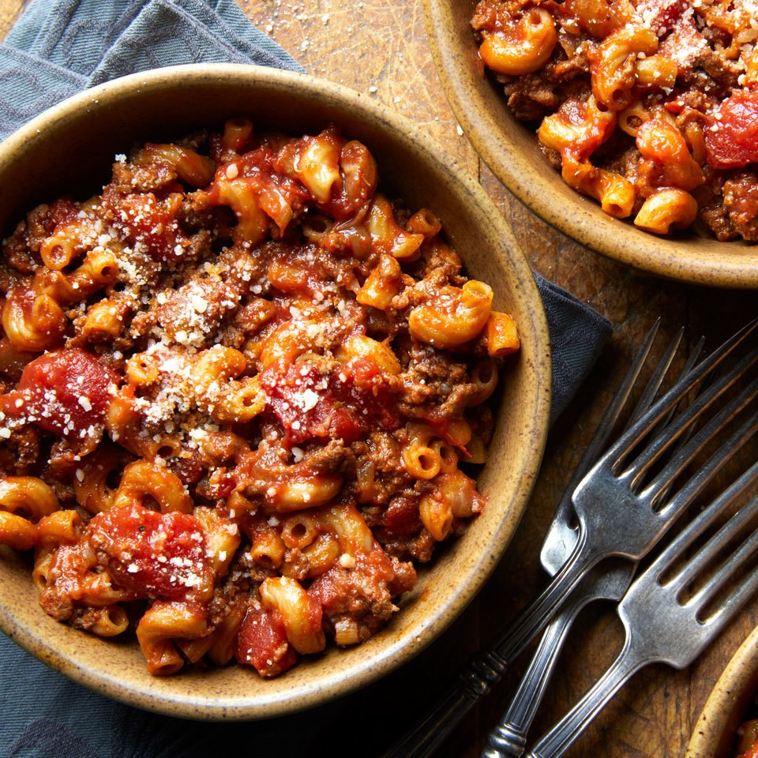

American Goulash

Description
Originating in Hungary, goulash is a soup or stew that features potatoes and/or other root vegetables,
stew beef and plenty of paprika. It cooks slowly, allowing the beef to tenderize and rich deep flavors
to develop. American goulash draws inspiration from the original dish, but is less like a stew and more
like a one-pot meal. It features ground beef, pasta (usually macaroni) and tomatoes. Unlike Hungarian
goulash, American goulash cooks quickly, making it a great family-friendly option for weeknights.
Both types of goulash feature the addition of paprika for spice and warmth.
Ingredients
- 1 tablespoon extra-virgin olive oil
- 1 1/2 cups chopped onion
- 1 pound lean ground beef
- 2 large cloves garlic, minced
- 2 teaspoons paprika
- 1 teaspoon Italian seasoning
- 1 teaspoon salt
- 1/4 teaspoon ground pepper
- 1 (14 ounce) can no-salt-added diced tomatoes, undrained
- 1 (8 ounce) can no-salt-added tomato sauce
- 1 cup low-sodium beef or chicken broth
- 1 1/4 cups whole-wheat elbow macaroni
- 2 tablespoons grated Parmesan cheese
Steps
- Heat oil in a large saucepan over medium-high heat.
- Add onion and beef; cook, breaking up meat with a wooden spoon, until no longer pink, about 5 minutes.
- Add garlic, paprika, Italian seasoning, salt and pepper; cook, stirring, for 1 minute. Stir in tomatoes and their juices, tomato sauce and broth. Bring to a boil.
- Reduce heat to medium-low, cover and cook for 5 minutes.
- Add macaroni and cook, uncovered, stirring occasionally, until tender, 6 to 9 minutes.
- Remove from heat and let stand for 5 minutes before serving. Sprinkle with Parmesan, if desired.
Home page